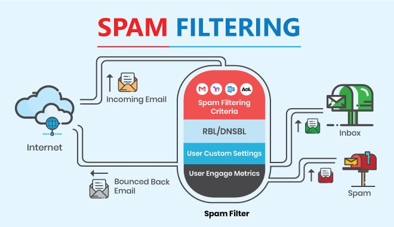

In the past, we have covered various methods of security. This week’s blog will discuss on the topic of messaging security. This basically refers to the practice of protecting the integrity of a message so that it can be read only by the intended recipient. This is most commonly done by methods of encryption. However, there are other components to message security that is overlooked.
When discussing about messaging security, a common term that comes up is “spam”. Spam is essentially junk email that is sent in bulk, typically for commercial purposes. They can also be malicious as much of it is sent by botnets and virus infected machines. It is estimated that about 80% of all emails sent in the world are spam. Other types of spam may take the form of: instant messaging, ads, fax, and social media spam.
Now that we have covered the basics of spam, how can it be detected? The two common methods are: Rule-based and Bayesian.
As always, another method of detection is manually by the user. This involves being aware of what spam is and the forms it can take. The common attributes of spam mail one must know are:
Now that the spam has been identified, how can it be blocked and ultimately avoided? Great news is that most spam is already filtered out and blocked by email software – so the user doesn’t need to do much. Essentially all email providers have a folder called “Spam” for this very purpose. With the help of IP’s, most spam is already identified on the network level before it even reaches one’s inbox. This is possible due to Real-time blackhole lists, or RBL’s. These lists dynamically hold IP addresses of spam sources.
In conclusion, spam is an important area of focus when it comes down to messaging security. Spam can contain malicious content that can be detrimental to a user if accessed. By using secure products and being aware of Spam in general - it can significantly reduce the chances of being harmed.